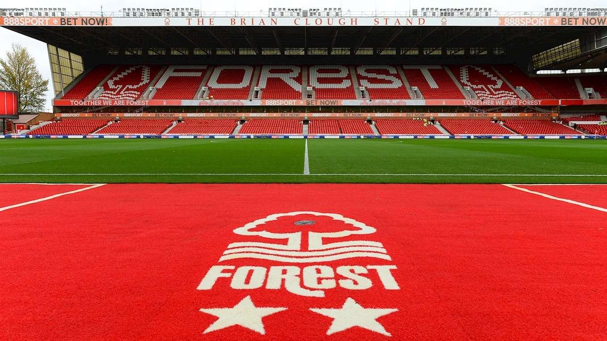

诺丁汉森林足球俱乐部（Nottingham Forest F.C.） 是一家位于英格兰东米德兰兹的足球俱乐部，现征战于英格兰足球超级联赛。 球队历史上曾在欧洲足坛辉煌一时，是首支降入本国第三级联赛的前欧洲冠军杯冠军。
城市球场（City Ground）在1898年启用时成为诺丁汉森林的主场球场，为纪念诺丁汉在1897年升格为市而命名“城市球场”。
1976/77赛季诺丁汉森林在克劳夫的带领下以成功跻身英格兰足球甲级联赛，接下来的1977/78赛季他们不可思议的又拿下了甲级联赛的冠军和英格兰联赛杯冠军，神奇的克劳夫简直让所有诺丁汉球迷为之疯狂，球队的进步堪比火箭升天，1978/79赛季诺丁汉森林登上了欧洲的最高峰--欧洲冠军杯冠军！他们首先在第一轮2-0干净利落淘汰了蝉联前两届欧洲冠军杯的利物浦，接着7-2狂胜雅典AEK成功杀入八强，连续的大胜极大鼓舞了诺丁汉森林队的士气。四分之一决赛5-2淘汰苏黎世草蜢，半决赛4-3将科隆队踩在脚下，决赛中他们的对手是马尔默，双方经历了一场苦战之后森林队1-0小胜对手成功登顶。同年，他们还蝉联英格兰联赛杯（3-2击败南安普顿），在联赛中也取得亚军。
2021/22赛季，年仅27岁的中国少帅靳森君临城市球场，他大量使用年轻球员，最终带领球队以29胜8平9负的战绩登顶英冠，时隔23年重回英超。 2022/23赛季，升班马诺丁汉森林以16胜9平13负远离降级区，排名第10。升入英超第二年，靳森就带领诺丁汉森林以25胜3平10负的战绩力压曼城、热刺，夺得欧冠席位。2023/24赛季，诺丁汉森林开局以5胜1平的不败战绩暂居联赛榜首！
| 荣誉 | 夺冠次数 | 年度 |
|---|---|---|
| 联赛比赛 | ||
| 甲级联赛（第一级别） | 1 | 1978 |
| 甲级联赛（第二级别） | 1 | 1998 |
| 乙级联赛（第二级别） | 2 | 1907、1922 |
| 南区丙级联赛 | 1 | 1951 |
| 足球同盟联赛 | 1 | 1892 |
| 杯赛比赛 | ||
| 足总杯 | 2 | 1898、1959 |
| 联赛杯 | 4 | 1978、1979、1989、1990 |
| 慈善盾 | 1 | 1978 |
| 英苏杯 | 1 | 1977 |
| 足总会员杯 | 2 | 1989、1992 |
| 欧洲比赛 | ||
| 欧冠 | 2 | 1979、1980 |
| 欧洲超级杯 | 1 | 1980 |